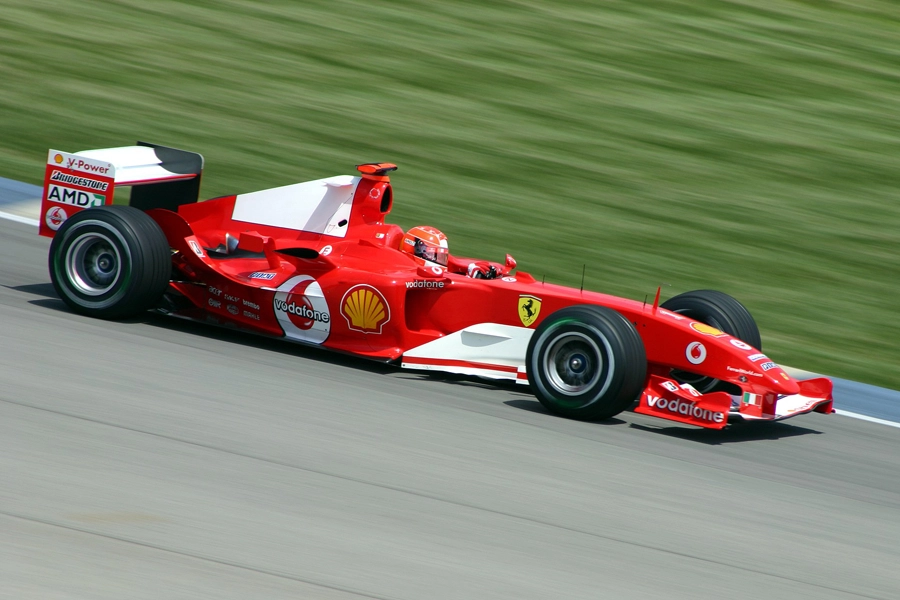
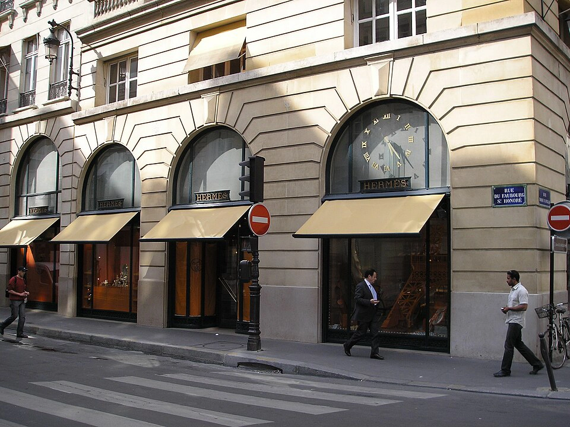
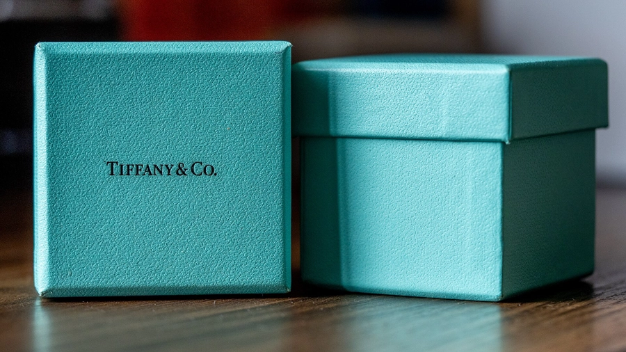
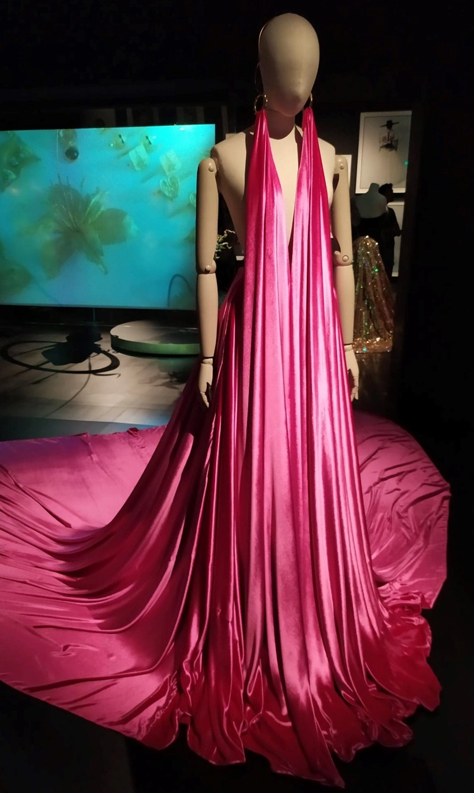
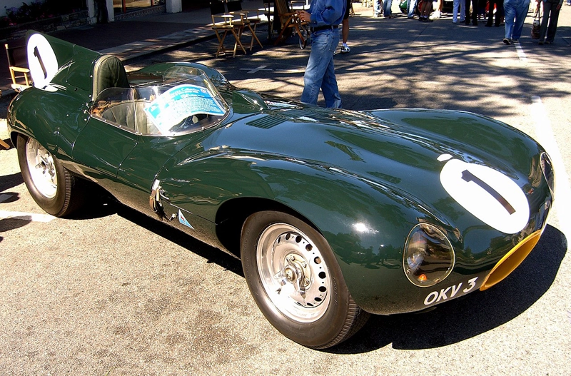
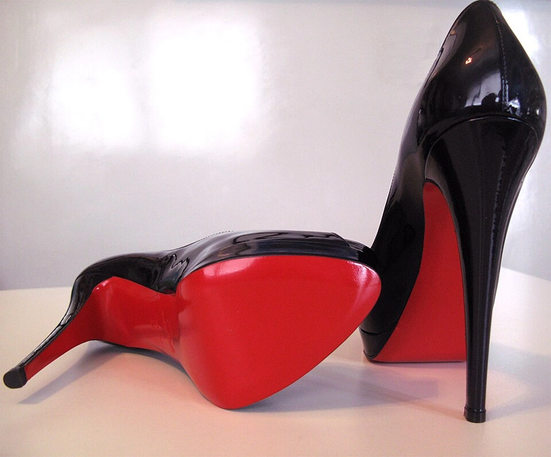

The Neurobiology of Color: Why We “Buy” with Our Eyes
Have you ever wondered why certain fashion photos make you stop scrolling instantly? The reason is deeper than good composition or a beautiful model — it’s neurobiology. Long before your conscious mind evaluates the dress style or brand, your brain has already reacted to the color palette.
How Color Directly Influences the Brain and Buying Decisions?
When light hits the retina, signals travel almost instantly to the hypothalamus — the part of the brain that controls emotions, motivation, and hormone release.
- Dopamine colors — bright, saturated tones (vivid pinks, oranges, yellows, fuchsias) trigger dopamine release → instant feeling of pleasure and reward
- Visual safety & trust — humans are evolutionarily wired to feel comfortable with “natural” palettes (blue sky + warm skin tones / golden hour light)
- The famous Teal & Orange look works so well because it mimics this ancient, comforting contrast
Retoucher’s insight: “Expensive-looking” images almost always have clean, pure colors. Muddy, grayish skin tones subconsciously signal poor health, low quality, or cheap production — triggering a subtle avoidance response.
Icons of Style: The Most Legendary Colors in Fashion History
Some colors have become far more valuable than any logo. Here are the shades every professional retoucher and fashion photographer should know intimately.
-
Ferrari Red (Rosso Corsa)
The ultimate symbol of speed, passion, and aggressive luxury. In retouching, Ferrari red should never shift too orange (looks cheap) or too magenta (feels heavy).
 -
Hermès Orange
Born during WWII dye shortages → became the world’s most exclusive orange. Retouching challenge: make it pop without making skin look jaundiced or sickly.
 -
Tiffany Blue (Pantone 1837)
The most legally protected color in the world. Instantly communicates elegance, romance, and “the perfect gift”.
 -
Schiaparelli Shocking Pink
Bold, surrealist pink that screams creativity, independence, and defiance of norms. Perfect for avant-garde editorials.
 -
Valentino Red
The red of passion, drama, and high-society femininity. Technical note: traditionally ~100% Magenta + 100% Yellow + ~10% Black. Retouching tip: keep luminance high, saturation controlled — fabric texture must remain visible.
-
Chanel Beige
Coco Chanel transformed a “poor” color into the ultimate symbol of quiet luxury. Goal: creamy, candlelit midtones — never too yellow (aged) or too gray (dirty).

-
British Racing Green
The “old money” heritage green. Works best with deep shadows, slightly desaturated greens, and high contrast — perfect for autumn/winter campaigns.
 -
International Klein Blue (IKB) & Bottega Green
Ultra-saturated “electric” colors designed to stand out on social media. Retouching secret: slight hue shift toward neon + natural skin tones = modern editorial contrast.

-
Louboutin Red Soles
The most famous “hidden” status symbol. Retouching goal: rich lacquer red (not neon plastic) — use Selective Color to protect vibrancy without clipping.
 -
Dior Gray (Gris Dior)
The color of quiet luxury and perfect elegance. Retouching technique: global desaturation + high luminance in midtones = expensive silvery glow.

-
Prada Pistachio Green
The ultimate “ugly-chic” mint. Shift greens toward yellow-cyan border, lift shadows slightly → soft matte velvety finish.

-
Vantablack / Musou Black
Absorbs 99.9% of light → creates “holes” in reality. Retouching challenge: crush blacks but preserve tiny specular highlights on fabric edges.

Beginner Retouching Tip: How to Start Thinking Like a Color Historian
- Always ask “Why this color?” — every brand choice is psychological
- Study basic color theory (Itten color wheel, complementary / triadic schemes)
- Trust your feeling — if the image suddenly feels “delicious”, you’ve most likely hit a subconscious sweet spot
Have you heard about the evolution of mannequins and how they have changed with the development of fashion?
There is an article about this here
Request Edit →